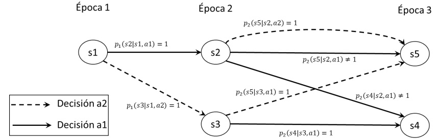
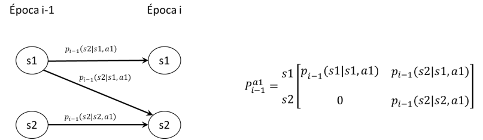
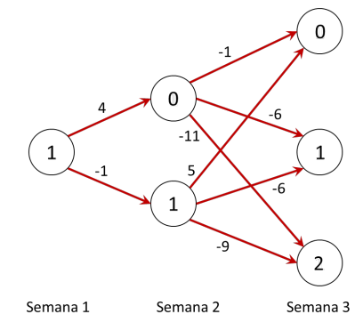

Procesos de decisión en el tiempo#
En este capítulo trataremos el problema de toma de decisiones óptimas, cuando no todas las decisiones tienen que ser tomadas en el mismo instante del tiempo. Discutiremos sobre cuáles problemas de optimización tienen una estructura que permite definirlos como procesos de decisión en el tiempo y sobre cuáles son los aspectos que caracterizan un problema de decisión en el tiempo. Luego hablaremos de cómo solucionar estos problemas y encontrar la solución óptima.
Introducción#
Un proceso de decisión en el tiempo es un tipo de problema donde una secuencia de decisiones debe ser tomada para optimizar un resultado que se obtiene a partir del estado de un sistema que varía con el tiempo. Un ejemplo muy clásico es la gestión de inventarios, donde en una secuencia de periodos se debe decidir cuándo y cuánto ordenar para mantener un nivel adecuado de inventario cuyo valor cambia en el tiempo. El valor de las decisiones que se toman dependerá no solo de las decisiones mismas (cantidad ordenada), sino del valor del inventario, ya que, por ejemplo, se incurrirá en costos de almacenamiento o incluso en costos por faltantes.
La variación del estado del sistema ocurre como consecuencia de las decisiones, así como puede también tener un componente asociado a factores externos. Por ejemplo, en el caso de la gestión de un inventario, las decisiones obviamente cambian el estado del sistema, dado que al recibir las órdenes el número de productos en el inventario sube. Pero, el nivel de inventario puede ser afectado por factores externos, como la demanda.
La dinámica de la variación del estado del sistema puede ser de naturaleza determinística o estocástica. En algunos escenarios, el resultado de las decisiones contempla certidumbre. Por ejemplo, consideramos el proceso de decisión de un inversionista en bolsa, que decide cuando vender sus acciones. Dado el estado del sistema, o sea el valor de la acción, si se decide vender cierta cantidad de acciones se obtendrá una ganancia que es totalmente predecible y que no afecta al estado del sistema (para pequeños accionistas). Por el contrario, existen casos donde una decisión genera variaciones del estado del sistema que solo son predecibles en términos probabilísticos. Por ejemplo, la venta de cantidades importantes de acciones podría generar un impacto sobre la bolsa. Así mismo, la dinámica del sistema podría ser inherentemente estocástica: por ejemplo, las variaciones en el inventario de un producto que resultan de una demanda no determinística.
Finalmente, consideraremos exclusivamente procesos de decisión discretos, o sea cuando el problema del tomador de decisión es seleccionar, entre un conjunto discreto de posibles alternativas de decisión, la mejor a tomar en un conjunto de instantes de tiempo discreto.
En la siguiente sección vamos a formalizar las componentes de un problema de decisión en el tiempo, que caracterizan los momentos en los cuales es necesario tomar decisiones, el conjunto de decisiones que son posibles, así como la información necesaria para entender y predecir la variación del estado del sistema y el valor que las decisiones otorgan al decisor.
La idea detrás de un proceso de decisión es tomar aquella decisión, según la época y el estado del sistema que optimice los retornos. Cada vez que se toma una decisión, se genera un retorno \(c_{t}(i,a)\), que puede ser negativo, positivo o cero.
Componentes#
Los procesos de decisión discretos en el tiempo son caracterizados a través de las siguientes componentes:
Conjunto de épocas \(E = \{ 1,\ldots,\ T\}\) discreto donde se observará el sistema y se tomarán decisiones. En cada época se toma una (y una sola) decisión para optimizar en ese periodo el valor para el tomador de decisión. Usualmente no se toman decisiones en la última época.
Variable de estado \(X_{t}\) que representa el sistema en cada periodo \(t \in E\). Nótese que la definición de la variable de estado es particularmente importante, dado que tiene que ser suficientemente informativa para que sea posible determinar el valor que se obtiene al tomar cada una de las posibles decisiones, así como predecir el nuevo estado del sistema. La variable de estado puede ser multi-dimensional.
Conjunto \(S_{t}\) de posibles valores (estados) que puede tomar la variable en la época de observación \(t\).
Conjunto \(A_{t}(i)\) de decisiones posibles, entre las cuales se elige la acción a tomar, cuando el sistema está en la época \(t \in E\) y la variable toma un valor \(i \in S_{t}\).
Retorno inmediato \(c_{t}(i,a)\) dado que se toma la decisión \(a \in A_{t}(i)\), en la época \(t \in E\) y el sistema se encuentra en el estado \(i \in S_{t}\).
Probabilidad \(p_{t}(j|i,a)\) que al tomar la decisión \(a \in A_{t}(i)\), en la época \(t \in E\), cuando el sistema está en el estado \(i \in S_{t}\), en la época \(t + 1\) el sistema pase a estar en el estado \(j \in S_{t + 1}\).
Ejemplo 1
Considere que tomará la decisión sobre el tipo de ropa que usará cada día. Sabe que cada día su decisión es afectada por el estado del clima. Dependiendo de su decisión, pueden ocurrir diferentes sucesos. Si usted decidió no llevar chaqueta o paraguas y llueve o hace frio, sentirá incomodidad sobre cómo va vestido. Por otro lado, si lleva chaqueta y hace calor, también puede estar incómodo. Por tal motivo, dado el estado del clima y su vestimenta, quiere maximizar la comodidad que sentirá a lo largo del horizonte de observación.
Para todo modelo de decisión, se debe caracterizar correctamente el modelo definiendo cada uno de sus componentes. En este caso tenemos que:
1. Se tomará la decisión cada día por lo que las épocas son \(E = \{\text{día}\ 1,\ \text{día}\ 2,\ \ldots\}\), o sea un conjunto discreto e infinito de épocas.
2. Queremos observar el clima para tomar nuestra decisión, por lo que \(X_{t} = \text{El clima en el }t - ésimo\ día\).
3. El espacio de estados \(S_{t}\) sería los posibles valores que toma la variable. Dado que si estamos resolviendo este problema en una ciudad donde tengan estaciones (invierno, primavera, verano, otoño), puede ocurrir que, para algunos días, no exista el estado lluvia o el estado nieve y en otros sí.
4. La decisión sería la vestimenta por utilizar. Del mismo modo, las posibles decisiones a tomar pueden variar según época y estado. Por ejemplo, seguro en un día de invierno está descartado sólo usar camiseta mientras que en un día de verano está descartado usar una chaqueta para nieve.
5. Como retorno inmediato, se tendría la comodidad que percibiría al usar un tipo de vestimenta dado el clima de ese día. Entre mejor vestido esté para el clima, sentirá una mayor comodidad. Dado que en efecto el clima solo se conoce de manera probabilística, puede que el retorno no sea determinístico.
6. El estado del clima es estocástico, por lo que época a época las probabilidades de que haga sol, viento, nieve, y demás varían.
Clasificación de los problemas de decisión en el tiempo#
Los procesos de decisión en el tiempo pueden clasificarse de la siguiente forma:

Los diferentes tipos de procesos de decisión los iremos abordando más adelante en el curso.
Relación con las cadenas de Markov#
Los procesos de decisión discretos como aquellos que estudiaremos tienen varios aspectos en común con las Cadenas de Markov en tiempo discreto. Primero, su estudio se basa en el concepto de estado. El estado de un proceso de decisión debe contener la información necesaria para que sea posible predecir el resultado de las decisiones y conocer el retorno y los posibles estados futuros del sistema. De manera muy parecida, el estado de una CMTD contiene toda la información necesaria para poder determinar las probabilidades de transición a estados futuros del sistema.
Sin embargo, en un proceso de decisión existe un elemento adicional determinado por la decisión a tomar. El conjunto de posibles decisiones determina múltiples posibles evoluciones, que comparten el mismo conjunto de estados. Si fijamos para cada época la decisión, estas múltiples evoluciones se reducen a una sola, la cual es de hecho una Cadena de Markov en tiempo discreto. Consideremos por ejemplo el diagrama en la siguiente figura, que representa un proceso de decisión donde \(E = \{ 1,\ 2,\ 3\}\), los estados son \(S_{1} = \{ s1\}\), \(S_{2} = \{ s2,s3\}\), \(S_{3} = \{ s4,s5\}\), y en cada época y estado es posible tomar una decisión entre dos posibles decisiones, así que \(A_{t}(i) = \{ a1,a2\}\), para todo \(t\) e \(i\). El diagrama describe un escenario donde al tomar cualquiera de las dos decisiones en el estado \(s1\), se conoce con certeza el nuevo estado del sistema en la época 2. Por ejemplo, al tomar la decisión \(a1\) en el estado \(s1\), dado que es \(p_{1}\left( s2 \middle| s1,a1 \right) = 1\), el nuevo estado en la época 2 será \(s2\). Por lo contrario, en la época 2, si se toma la decisión \(a1\) en el estado \(s2\), el nuevo estado del sistema en la época 3 será \(s4\) o \(s5\), de acuerdo con las probabilidades \(p_{2}\left( s4 \middle| s2,a1 \right)\) y \(p_{2}\left( s5 \middle| s2,a1 \right)\), respectivamente. Note que en la última época (época 3) no se toman decisiones.

Ahora bien, si consideramos una política cualquiera, o sea fijamos la decisión de la época 1 y de la época 2, algunas de las transiciones en el diagrama anterior no existirán más. Por ejemplo, si la decisión fuese \(a1\) en ambas épocas, el diagrama sería como se ilustra en la siguiente figura, que es el diagrama de estado transición para una cadena de Markov en tiempo discreto (solo hace falta agregar el reciclo con probabilidad 1 a los estados de la última época).

En un proceso de decisión en el tiempo, los mismos estados del sistema pueden repetirse en diferentes épocas. Por ejemplo, consideremos el problema de gestión de un inventario. En cada época, podría ser posible por ejemplo encontrar el estado igual a la capacidad máxima del inventario, así como todos los demás estados entre 0 y el valor máximo. En estos casos, puede ser conveniente agrupar las probabilidades de transición \(p_{t}(j|i,a)\) en matrices, una por cada decisión. Por ejemplo, consideremos el diagrama que se muestra a la izquierda en la siguiente figura, la cual muestra la información sobre las transiciones que se dan entre los estados de la época \(i - 1\) y aquellos de la época \(i\) al tomar la decisión \(a1\):

Es posible agrupar las probabilidades en la forma matricial que se ilustra a la derecha. En particular, si las probabilidades de transición asociadas a las decisiones no dependen de la época, esta representación matricial es muy conveniente. En este caso, con respecto a cada decisión, la Cadena de Markov en tiempo continuo es homogénea en el tiempo, dado que las probabilidades de transición no cambian con la época.
La política óptima#
Se conoce como una política \(\pi\) a una combinación de las posibles decisiones que es posible tomar por estado y por época (no confundir con los vectores de distribución de probabilidad en estado estacionario \(\overrightarrow{\pi}\)). Existen muchas políticas diferentes, todas aquellas que son posibles obtener con una secuencia de decisiones, y cada una genera un retorno diferente. La política óptima se conoce como \(\pi^{*}\), y es aquella que optimice los retornos totales del tomador de decisiones, que corresponden a la suma de los retornos inmediatos acumulados en todas las épocas.
Ahora bien, existen varias metodologías para encontrar la política óptima de un problema. Pero para esto debemos considerar la estructura que genera un problema de decisión en el tiempo.
Estructura de un problema de decisión en el tiempo#
Dadas las características con las que cuenta un problema de decisión en el tiempo, una de las posibles formas de representarlo es una red o un grafo orientado, donde:
Existe un conjunto de nodos por cada época;
Cada nodo es un posible estado del sistema, en una época de decisión;
Un arco siempre conecta nodos que están en épocas consecutivas, y representa la posibilidad de que el sistema transite del estado en la época \(t\) a un estado en la época \(t + 1\), como consecuencia de una decisión;
Los arcos tienen etiquetas que representan el retorno inmediato asociado a la decisión.
Ejemplo 2
Usted es dueño de una tienda donde vende un tipo de producto. Cada semana quiere decidir cuántos productos producir para tener en inventario, teniendo en cuenta que para la semana 1 le demandarán máximo 2 unidades y para la semana 2 le demandará 1 unidad. Además, su inventario tiene una capacidad de 3 unidades y en todo momento debe tener suficiente inventario para suplir la demanda de la semana. Finalmente usted produce al principio de la semana, antes de que la tienda abra, por lo que debe tener suficiente inventario para la demanda de esa semana y en ningún momento puede tener más de la capacidad en inventario. Sabe que por cada unidad en inventario que quede al final de la semana le genera un costo de \(\$ c\), que producir cada unidad tiene un costo de \(\$ k\), que producir genera un costo fijo de \(\$ m\) y cada unidad vendida le genera una ganancia \(\$ v\). Además, hoy tiene 1 unidad en inventario y quiere encontrar la política óptima de producción durante estas 2 semanas.
Este problema se puede representar como una red de la siguiente forma:

Aunque el último momento para tomar una decisión es la semana 2, es preferible mostrar que pasa al tomar la última decisión y a qué estados llegaría la red en la siguiente época. Una posible política de decisión en este caso sería producir 1 unidad en la semana 1 con una ganancia \(2v - k - m\) y producir 1 unidad en la semana 2, con una ganancia de \(v - k - m\). No obstante, otra posible política sería producir 2 unidades en la semana 1 con una ganancia de \(2v - 2k - m - c\) y no producir nada en la semana 2 con una ganancia de \(v\). La política óptima es aquella que maximice las ganancias de la tienda en todo el horizonte del problema de decisión (todas las épocas).
En el modelo anterior no existe incertidumbre, es un problema de decisión determinístico. Sin embargo, es sencillo y muy natural extenderlo para considerar casos donde por ejemplo la demanda sea conocida solo a través de una distribución de probabilidad. Por ejemplo, suponga que tenemos una unidad en inventario y que la demanda puede ser 1 o 2 en la semana 1 con la misma probabilidad. De esta forma, la combinación de las decisiones con los posibles valores de la demanda resulta en múltiples arcos que conectan los estados. En la figura siguiente, se utilizan colores diferentes para distinguir las transiciones de estado cuando se tome la decisión de producir 1 unidad de producto (arcos en azul) y 2 unidades de producto (arcos en negro).

Pueden existir faltantes y no es seguro a qué estado pasaría. estopor consiguiente, la red crece y el método de solución cambia.
Métodos de solución#
Un problema de decisión en el tiempo se beneficia por su estructura de red. Y para solucionarlo, existen diferentes metodologías.
La primera metodología se conoce como enumeración exhaustiva, en la cual se identifican todas las posibles políticas existentes, se estima su valor en términos de la función objetivo del problema y se comparan unas tras otras hasta encontrar la mejor. Es una metodología sencilla, pero a su vez puede requerir de una gran cantidad de tiempo para encontrar el óptimo dado que en general el número de posibles políticas crece rápidamente con el número de épocas, estados y decisiones. Esto hace a la enumeración exhaustiva una metodología ineficiente para problemas a gran escala. Asumiendo que en total son \(T\) épocas, \(S\) estados en cada época y que el número de decisiones en cada estado es a su vez \(S\), podrían existir hasta \(s^{T}\) políticas diferentes. En el ejemplo 2, se contemplan hasta 6 políticas diferentes y, para aplicar esta metodología, se debe comparar una a una hasta encontrar la mejor.
La segunda metodología utiliza un modelo de optimización lineal asociado al problema de decisión en el tiempo. En efecto, la estructura en red se puede modelar como un modelo lineal, y existen varios paquetes de software especializados que permiten solucionar modelos de gran tamaño de forma eficiente. Sin embargo, no es sencillo incluir en los modelos de optimización lineal los aspectos de incertidumbre. Si bien es posible, ello se realiza a costa de complicar la estructura del modelo.
La última metodología se conoce como inducción hacia atrás, y esto es el enfoque que manejaremos a lo largo de los siguientes capítulos. Esta metodología ahorra tiempo de solución, teniendo en cuenta que se puede resolver problemas más pequeños del problema general y así construir la política óptima a partir de las soluciones de los subproblemas. Adicionalmente, tiene la ventaja de poder tratar la incertidumbre de forma muy natural. Por ende, esta técnica de solución para problemas determinísticos es esencialmente igual a la técnica de solución para el caso estocástico.
En el siguiente ejemplo se explica el principio que fundamenta la técnica de inducción hacia atrás. La idea fundamental es que el problema de decisión en el tiempo puede ser solucionado de forma sencilla explorando primero las consecuencias de las decisiones que es posible tomar en la última época del horizonte. Una vez determinadas las posibles ganancias en la última época, se procede a explorar las posibles ganancias en la penúltima época, y así de forma iterativa hasta llegar a la primera. En este proceso iterativo, se determinan soluciones parciales para subproblemas que se reutilizan en la solución de problemas más complejos.
Ejemplo 3
Continuando con el ejemplo anterior, asignamos valores concretos a los costos y ganancias. Supongamos que sea \(c = 3,\ k = 2,\ m = 4\ y\ v = 5\). Entonces la red es la siguiente:

Para aplicar la metodología de inducción hacia atrás, comenzamos con analizar las posibles decisiones en la última época (semana 2). Si estamos en el estado 0 en la semana 2 de decisión, es menos costoso producir sólo 1 unidad y tener un costo de -1, dado que cualquier otra decisión genera más costos. Así que podemos marcar en la red el resultado de esa decisión, anotando en el estado 0 el valor de la decisión optima (-1) y marcando en gris las decisiones que ya no interesan.

Así mismo, en el estado 1 de la semana 2, la mejor decisión es no producir, dado que este caso la ganancia es 5 y para las demás decisiones es negativa. Anotamos otra vez en la red el resultado de esta decisión, como sigue. Ahora el problema de decisión se reduce de una época, como sigue.

Ahora el problema de decisión se ha reducido, dado que para la última época ya encontramos las decisiones óptimas, dependiendo del estado de la red. De esta manera, ya quitamos muchas de las varias rutas posibles, reduciendo significativamente la complejidad. Ahora nos queda por examinar las posibles decisiones en la semana 1. Son solo dos, dado que el estado de la red es solo 1:
1) Producir 1 unidad en la semana 1, lo cual genera un valor de 4, y lleva la red al estado 0, donde ya sabemos que con la mejor decisión se genera un costo de -1, por un total de 3.
2) Producir 2 unidades en la semana 1 (valor -1), y por consecuencia llegar al estado 1 en la semana 2, donde el valor óptimo es 5 (decisión no producir), por un total de ganancia de 4.
La mejor decisión corresponde a la segunda, es decir, aquella que maximiza el valor de la ganancia. Para la semana 1 es mejor producir dos unidades, y para la semana 2 no producir. Esta es la política óptima para el problema, que encontramos con la técnica de inducción hacia atrás. Podemos representar la política óptima en la red, como se ilustra en la siguiente figura, donde se muestran las mejores decisiones, los estados que estas generan en la dinámica del sistema, y las ganancias (inmediatas y acumuladas).

Es importante observar como la complejidad del problema de decisión ha sido tratada a través del análisis secuencial de las posibles épocas, de la última a la primera. Recorrer las posibles decisiones hacia atrás en el tiempo simplifica el problema, mientras que intentar de solucionarlo empezando de la primera época hacia adelante nos deja con el problema de evaluar simultáneamente todos los posibles futuros (posibles decisiones) para el valor de la función objetivo. Gracias a inducción hacia atrás, se comparan menos políticas encontrando mucho más rápido la política óptima.